3．高次平面曲线
至此所述解析几何还是专门讲述一次和二次曲线、曲面的。当然研究高次方程表示的曲线是自然的。事实上笛卡儿早就讨论过一些高次方程及其所代表的曲线。次数高于2的曲线的研究变成众所周知的高次平面曲线理论，尽管它是坐标几何的组成部分。18世纪所研究的曲线都是代数曲线，即它们的方程由
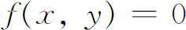
给出，其中f是x和y的多项式。曲线的次数或阶数就是项的最高次数。牛顿第一个对高次平面曲线进行了广泛的研究。笛卡儿按照曲线方程的次数来对曲线进行分类的计划深深地打动了牛顿，于是牛顿用适合于各该次曲线的方法系统地研究了各次曲线，他从研究三次曲线着手。这个工作出现在他的《三次曲线列举》（Enumeratio Linearum Tertii Ordinis）中，这是作为他的《光学》（Opticks）英文版的附录在1704年出版的，但实际上大约在1676年就做出来了。虽然在拉伊尔和沃利斯的著作中使用了负x值和负y值，但牛顿不仅用了两个坐标轴和负x负y值，而且还在所有四个象限中作图。
牛顿证明了怎样能够把一般的三次方程
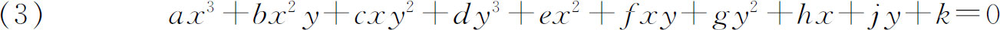
所代表的一切曲线通过坐标轴的变换化为下列四种形式之一：
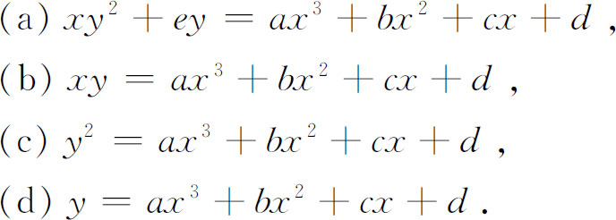
牛顿把第三类曲线叫做发散抛物线（diverging parabolas），它包括图23.2所示的五种曲线。这五种曲线是根据等式右边三次式的根的性质来区分的：全部是相异实根；两个根是复根；都是实根但有两个相等而且重根大于或小于单根；三个根都相等。牛顿断言，先从一点出发对这五种曲线之一作射影，然后取射影的交线就能分别得到每一个三次曲线。
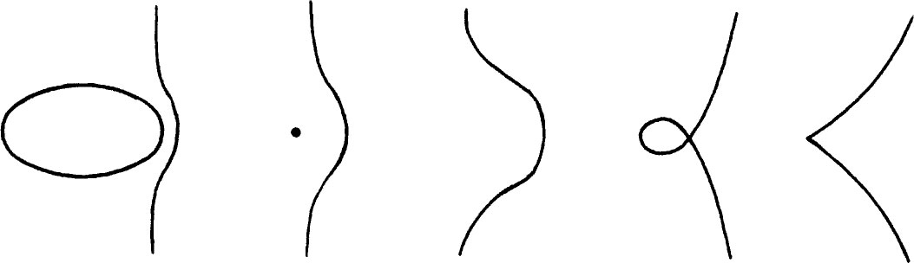
图23.2
牛顿对他在《列举》中的许多断言都没有给出证明。斯特林在他的《三次曲线》中证明了或用别的方法重新证明了牛顿的大多数断言，但是没有证明射影定理，射影定理是克莱罗(6)和尼科尔（François Nicole，1683—1758）(7)证明的。其实牛顿识别了72种三次曲线，斯特林加上了4种，修道院院长瓜德马尔韦斯在他1740年题为《利用笛卡儿的分析而不借助于微积分去进行发现……》（Usage de l'analyse de Descartes pour découvrir sans le secours du calcul différential…）的小书里又加上了2种。
牛顿关于三次曲线的工作激发了关于高次平面曲线的许多其他研究工作。按照这个或那个原则对三次和四次曲线进行分类的课题继续使18和19世纪的数学家们感兴趣。随着分类方法的不同所找到的分类数目也不同。
从牛顿的5种三次曲线的图形显然可见，高次方程所代表的曲线呈现着许多在一次和二次曲线中没有发现过的特性。称为奇点的初等特性是拐点和多重点。在继续讲下去以前，我们先来看一下这些奇点是什么样子的。
拐点在微积分里是熟悉的。在曲线上一点处，若有两条或多条可以重合的切线，这样的点就叫做多重点。在这样的点上曲线有两个或多个分支相交。如果有两条分支曲线交于多重点，这种点就叫做二重点。如果三条分支曲线交于多重点，则这种点叫做三重点，如此等等。
如果我们把一条代数曲线的方程取作
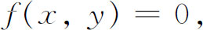
f为x，y的一个多项式，我们总可以通过一个平移把常数项消去。如果消去了常数项，又如果f中有一次项，记作
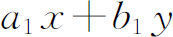
，那么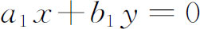
给出了曲线在原点处的切线方程。这时原点不是多重点。如果曲线没有一次项，又如果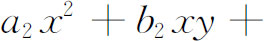
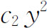
是二次项，那么就会出现几种情形。方程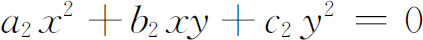
可以代表两条不同的直线。这两条直线与曲线在原点相切（这是可以证明的），而因为有两条不同的切线，所以原点就是一个二重点，这个点叫做结点（node）。例如双纽线（图23.3）的方程是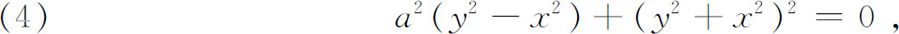
而由二次项得到
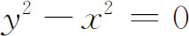
，于是y＝x和y＝-x是切线的方程。类似地，笛卡儿叶形线的方程是（图23.4）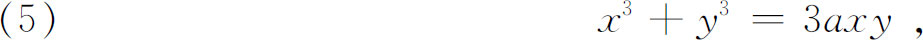
切于原点的切线由x＝0和y＝0给出，原点是一个结点。
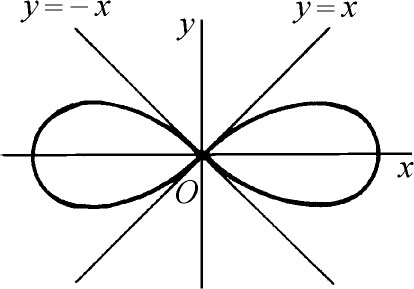 | 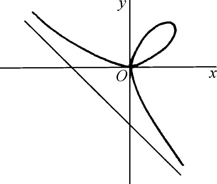 |
| 图23.3 双纽线 | 图23.4 笛卡儿叶形线 |
当两条切线重合时，这一条直线看作是二重切线，而曲线的两个分支就在相切的点上互相接触，这种点叫尖点（cusp）。（有时把尖点包括在二重点中。）例如半立方抛物线（图23.5）
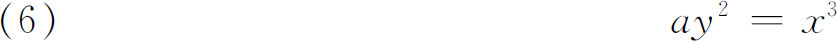
在原点有一个尖点，而两条重合的切线的方程是y2＝0。对于曲线
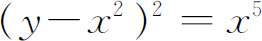
（图23.6），原点是一个尖点。这里曲线的两个分支都位于二重切线y＝0的同一侧。瓜德马尔韦斯在他的《利用笛卡儿的分析》中曾试图证明不会出现这种类型的尖点，但是欧拉(8)给出了有这种尖点的许多例子。尖点也叫做平稳点或逆行点，因为一个沿着曲线移动的点，在尖点处继续其运动之前一定要停顿一下。
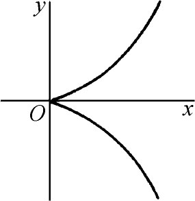 | 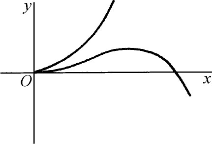 |
| 图23.5 半立方抛物线 | 图23.6 |
当两条切线是虚的时候，二重点叫做共轭点。共轭点的坐标满足曲线的方程，但是这个点和曲线的其余部分隔离开来。例如曲线
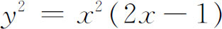
（图23.7）在原点有一个共轭点。这里二重切线的方程是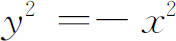
，而切线都是虚线。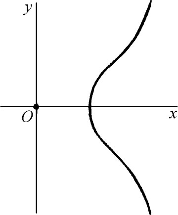
图23.7
曲线
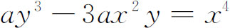
（图23.8）在原点有一个三重点。这三条切线的方程是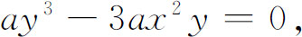
或y＝0和
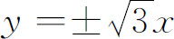
．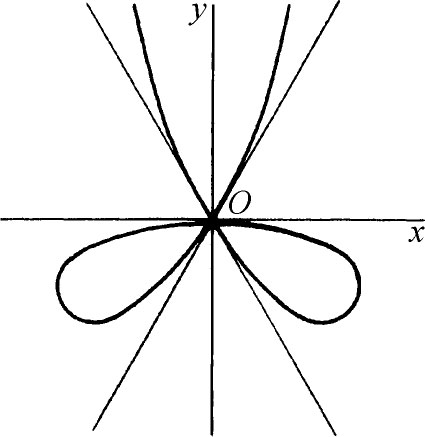
图23.8
曲线
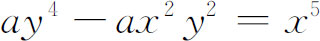
（图23.9）在原点有一个四重点。在这里原点是结点和尖点的结合。切线是y＝0，y＝0，y＝±x。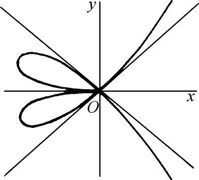
图23.9
三次（阶）曲线可以有一个二重点（它可以是尖点），但没有别的多重点。当然存在没有二重点的三次曲线。
回到纯粹的历史角度来看，莱布尼茨及其后继者研究了曲线上许多这种样子特别的或奇异的点。至于出现这种点的解析条件——诸如在拐点处
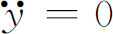
，在二重点处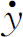
不确定——甚至微积分的奠基者们都已经知道。克莱罗在上面引用过的1731年的书中假设了一条三次曲线不能有多于三个的实拐点，但至少必有一个实拐点。瓜德马尔韦斯在《利用》中证明了，如果一条三次曲线有三个实拐点，则通过两个拐点的连线一定过第三个拐点。人们常常把这个定理归功于麦克劳林。瓜德马尔韦斯也研究了二重点，而且给出了二重点的条件，即如果
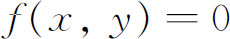
是曲线的方程，则在二重点处fx和fy一定等于0。k重点由所有直到（k-1）阶导数都等于零来表征。他证明了奇点是尖点、普通点和拐点的混合点。此外，瓜德马尔韦斯论述了曲线的中点，曲线延伸到无穷的分支的形式，以及这种分支的性质。麦克劳林在他19岁时写的《有机的几何学》（Geometria Organica，1720）中证明了，一条n次不可约曲线的二重点的最多个数是
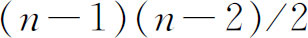
。为此他把一个k重点当作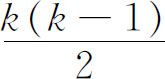
个二重点。他还给出了各类更高重数多重点的个数的上界。然后他引进了代数曲线亏数（deficiency，后来叫做genus）的概念，即二重点的最大可能的个数减去实际二重点的个数。亏数为0或具有最大可能二重点个数的曲线受到了很大的注意。这些曲线也叫做有理曲线或单行（unicursal）曲线。几何上，一条单行曲线可以由一个动点的连续运动描出（但是可以通过无穷远点）。例如圆锥曲线，包括双曲线，都是单行曲线。牛顿在他的《流数法》中，给出了在一个多重点上，确定曲线各分支的级数表示的方法，通常叫做牛顿图或牛顿平行四边形（第20章第2节）。瓜德马尔韦斯在《利用》中用一个代数三角形（triangle algébrique）来代替牛顿平行四边形。因此，如果原点是奇点，则对于小的x，代数曲线的方程就分解成形如
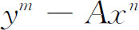
的因子，其中m是正整数而n是整数。n是正整数的那些因子给出了曲线的分支。欧拉注意到（1749）瓜德马尔韦斯忽略了虚的分支。克莱姆（1704—1752）在他的《代数曲线的解析引论》（Introduction à l'analyse des lignes courbes algébriques，1750）中，为了确定曲线的每个分支的级数表达式，特别是确定延伸到无穷远的分支的级数表达式，他还解决了当y和x之间的关系是由隐函数即
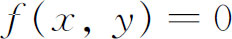
给出时，y用x来展开的问题。他把y展成x的升幂级数或降幂级数。和瓜德马尔韦斯一样，他也用三角形来代替牛顿的平行四边形，他也和别的作者一样忽略了曲线的虚分支。对于曲线在一个多重点上的各分支，由于求得了它们的级数展开而产生的结论，在更晚一些时候由皮瑟（Victor Puiseux，1820—1883）(9)推得，因而通常叫做皮瑟定理：代数平面曲线上一点
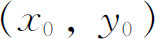
的全邻域能表示为有限个展开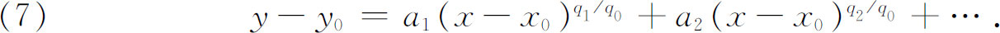
这些展开在x0的某个区间内收敛而且所有的qi没有公因子。每一个展开给出的那些点就叫做这条代数曲线的一个分支。
曲线和直线的交点，以及两条曲线的交点，是另一个受到很大注意的课题。斯特林在他1717年写的《三次曲线》中证明了（x和y的）n次代数曲线由该曲线的
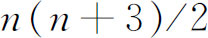
个点所决定，因为这种曲线有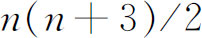
个本质系数。他还断言，任两平行线切割一条给定的曲线，它们的交点（实的或虚的）个数相同，而且他证明了延伸到无穷远的曲线的分支个数是偶数。麦克劳林的《有机的几何学》创立了高次平面曲线交的理论。他的工作推广了由特殊情形所得到的结果，而且在此基础上得出结论：m次方程和n次方程交于mn个点。1748年欧拉和克莱姆企图证明这个结果，但都没有给出正确的证明。欧拉(10)依靠一种类比的论证；认识到他的这种论证是不完全的，他说人们应该把这种方法用到特殊的例子上去。克莱姆在他1750年的书中的“证明”完全依靠例子，这种证明无疑是不能接受的。两个人都考虑了具有虚坐标的交点和无穷远的公共点，而且注意到，仅当两种类型的点都包括在内而且两条曲线没有ax＋by那样的公因子时，交点个数才能达到mn。然而，两个人都没能确定若干类型交点的特有的相重数。1764年贝祖（1730—1783）对这个定理给出了一个较好的证明，但是在计算无穷远点和多重点的相重数方面，证明也是不完全的。真正计算相重数的问题是由阿尔方（Georges-Henri Halphen，1844—1889）在1873年解决的(11)。
克莱姆在他1750年的书中重新研究了麦克劳林在他的《几何》中已经注意到的一个涉及两条曲线的交点个数的悖论。一条n次曲线由
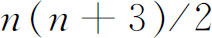
个点决定。两条n次曲线相交于n2个点。如果现在n是3，则由第一句话，这条曲线应该由九个点决定。但是由于两条三次曲线相交于九个点，这九个点不能唯一地决定一条三次曲线。当n＝4时产生了类似的悖论。克莱姆关于这个悖论（现在被看作是他的）的解释是：确定n2个交点的n2个方程不是独立的。通过一条给定三次曲线上八个固定点的所有三次曲线都一定通过该曲线上第九个固定点，即第九个点是依赖于头八个点的。欧拉在1748年给出了同样的解释(12)。1756年古丹（Matthieu B．Goudin，1734—1817）和迪奥尼斯·杜·塞茹尔（Achille-Pierre Dionis du Séjour，1734—1794）写成了《代数曲线论》（Traité des courbes algébriques）。该书的新特点是：一条n阶（次）曲线在一给定方向不可能有多于
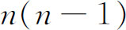
条的切线，其渐近线也不能多于n条。就像麦克劳林已经指出过的那样，他们指出一条渐近线与曲线相交，交点不能多于n-2个。18世纪关于高次平面曲线成果的两本最好的简明而广泛的著述，是欧拉的《引论》第二卷（1748）和克莱姆的《代数曲线论》（Lignés courbes algébriques）。后一本书有统一的观点，出色地作了详细的阐述，并包括许多好的例题。这本书经常被引用，以至把原来并非克莱姆的结果也当作是克莱姆的了。